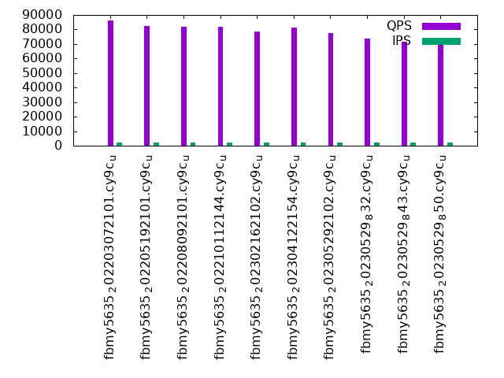

Introduction
This is a report for the insert benchmark with 12000M docs and 24 client(s). It is generated by scripts (bash, awk, sed) and Tufte might not be impressed. An overview of the insert benchmark is here and a short update is here. Below, by DBMS, I mean DBMS+version.config. An example is my8020.c10b40 where my means MySQL, 8020 is version 8.0.20 and c10b40 is the name for the configuration file.
The test server has 80 cores, hyperthreads enabled, 256G RAM and fast NVMe with XFS. The benchmark was run with 24 clients and there were 1 or 3 connections per client (1 for queries or inserts without rate limits, 1+1 for rate limited inserts+deletes). There are 24 tables, with a client per table. It loads 500M rows per-table without secondary indexes, creates secondary indexes, then inserts 50M rows per-table with a delete per insert to avoid growing the table. It then does 3 read+write tests for 3600s each that do queries as fast as possible with 100, 500 and then 1000 inserts/second/client concurrent with the queries and 1000 deletes/second to avoid growing the table. The database is larger than memory.
The tested DBMS are:
- fbmy5635_202203072101.cy9c_u - FB MySQL 5.6.35 compiled at git hash e7d976ee (7 Mar 2022 tag) with RocksDB 6.28.2, cy9c_u (base) config
- fbmy5635_202205192101.cy9c_u - FB MySQL 5.6.35 compiled at git hash d503bd77 (19 May 2022 tag) with RocksDB 7.2.2, cy9c_u (base) config
- fbmy5635_202208092101.cy9c_u - FB MySQL 5.6.35 compiled at git hash 877a0e58 (9 Aug 2022 tag) with RocksDB 7.3.1, cy9c_u (base) config
- fbmy5635_202210112144.cy9c_u - FB MySQL 5.6.35 compiled at git hash c691c716 (11 Oct 2022 tag) with RocksDB 7.3.1, cy9c_u (base) config
- fbmy5635_202302162102.cy9c_u - FB MySQL 5.6.35 compiled at git hash 21a2b0aa (16 Feb 2023 tag) with RocksDB 7.10.0, cy9c_u (base) config
- fbmy5635_202304122154.cy9c_u - FB MySQL 5.6.35 compiled at git hash 205c31dd (12 Apr 2023 tag) with RocksDB 7.10.2, cy9c_u (base) config
- fbmy5635_202305292102.cy9c_u - FB MySQL 5.6.35 compiled at git hash b739eac1 (29 May 2023 tag) with RocksDB 8.2.1, cy9c_u (base) config
- fbmy5635_20230529_832.cy9c_u - FB MySQL 5.6.35 compiled at git hash b739eac1 (29 May 2023 tag) with RocksDB 8.3.2, cy9c_u (base) config
- fbmy5635_20230529_843.cy9c_u - FB MySQL 5.6.35 compiled at git hash b739eac1 (29 May 2023 tag) with RocksDB 8.4.3, cy9c_u (base) config
- fbmy5635_20230529_850.cy9c_u - FB MySQL 5.6.35 compiled at git hash b739eac1 (29 May 2023 tag) with RocksDB 8.5.0, cy9c_u (base) config
Contents
- Summary
- l.i0: load without secondary indexes
- l.x: create secondary indexes
- l.i1: continue load after secondary indexes created
- q100.1: range queries with 100 insert/s per client
- q500.1: range queries with 500 insert/s per client
- q1000.1: range queries with 1000 insert/s per client
Summary
The numbers are inserts/s for l.i0 and l.i1, indexed docs (or rows) /s for l.x and queries/s for q100, q500, q1000. The values are the average rate over the entire test for inserts (IPS) and queries (QPS). The range of values for IPS and QPS is split into 3 parts: bottom 25%, middle 50%, top 25%. Values in the bottom 25% have a red background, values in the top 25% have a green background and values in the middle have no color. A gray background is used for values that can be ignored because the DBMS did not sustain the target insert rate. Red backgrounds are not used when the minimum value is within 80% of the max value.
| dbms | l.i0 | l.x | l.i1 | q100.1 | q500.1 | q1000.1 |
|---|---|---|---|---|---|---|
| fbmy5635_202203072101.cy9c_u | 569828 | 1422150 | 68070 | 86457 | 80965 | 72082 |
| fbmy5635_202205192101.cy9c_u | 538648 | 1399918 | 64109 | 82368 | 77176 | 68488 |
| fbmy5635_202208092101.cy9c_u | 531608 | 1402372 | 62995 | 81628 | 76219 | 68239 |
| fbmy5635_202210112144.cy9c_u | 535260 | 1399755 | 63022 | 82039 | 76585 | 68444 |
| fbmy5635_202302162102.cy9c_u | 543897 | 1396985 | 57301 | 78541 | 73232 | 64503 |
| fbmy5635_202304122154.cy9c_u | 541418 | 1384254 | 57463 | 81085 | 75253 | 63556 |
| fbmy5635_202305292102.cy9c_u | 538116 | 1380591 | 56775 | 77529 | 72450 | 64168 |
| fbmy5635_20230529_832.cy9c_u | 534736 | 1388258 | 57214 | 73815 | 69228 | 61450 |
| fbmy5635_20230529_843.cy9c_u | 521218 | 1393902 | 56325 | 71605 | 67261 | 58499 |
| fbmy5635_20230529_850.cy9c_u | 534712 | 1380115 | 56840 | 72391 | 67695 | 58978 |
This table has relative throughput, throughput for the DBMS relative to the DBMS in the first line, using the absolute throughput from the previous table. Values less than 0.95 have a yellow background. Values greater than 1.05 have a blue background.
| dbms | l.i0 | l.x | l.i1 | q100.1 | q500.1 | q1000.1 |
|---|---|---|---|---|---|---|
| fbmy5635_202203072101.cy9c_u | 1.00 | 1.00 | 1.00 | 1.00 | 1.00 | 1.00 |
| fbmy5635_202205192101.cy9c_u | 0.95 | 0.98 | 0.94 | 0.95 | 0.95 | 0.95 |
| fbmy5635_202208092101.cy9c_u | 0.93 | 0.99 | 0.93 | 0.94 | 0.94 | 0.95 |
| fbmy5635_202210112144.cy9c_u | 0.94 | 0.98 | 0.93 | 0.95 | 0.95 | 0.95 |
| fbmy5635_202302162102.cy9c_u | 0.95 | 0.98 | 0.84 | 0.91 | 0.90 | 0.89 |
| fbmy5635_202304122154.cy9c_u | 0.95 | 0.97 | 0.84 | 0.94 | 0.93 | 0.88 |
| fbmy5635_202305292102.cy9c_u | 0.94 | 0.97 | 0.83 | 0.90 | 0.89 | 0.89 |
| fbmy5635_20230529_832.cy9c_u | 0.94 | 0.98 | 0.84 | 0.85 | 0.86 | 0.85 |
| fbmy5635_20230529_843.cy9c_u | 0.91 | 0.98 | 0.83 | 0.83 | 0.83 | 0.81 |
| fbmy5635_20230529_850.cy9c_u | 0.94 | 0.97 | 0.84 | 0.84 | 0.84 | 0.82 |
This lists the average rate of inserts/s for the tests that do inserts concurrent with queries. For such tests the query rate is listed in the table above. The read+write tests are setup so that the insert rate should match the target rate every second. Cells that are not at least 95% of the target have a red background to indicate a failure to satisfy the target.
| dbms | q100.1 | q500.1 | q1000.1 |
|---|---|---|---|
| fbmy5635_202203072101.cy9c_u | 2381 | 11904 | 23828 |
| fbmy5635_202205192101.cy9c_u | 2381 | 11904 | 23834 |
| fbmy5635_202208092101.cy9c_u | 2381 | 11907 | 23828 |
| fbmy5635_202210112144.cy9c_u | 2381 | 11904 | 23821 |
| fbmy5635_202302162102.cy9c_u | 2381 | 11901 | 23788 |
| fbmy5635_202304122154.cy9c_u | 2380 | 11894 | 23775 |
| fbmy5635_202305292102.cy9c_u | 2381 | 11904 | 23788 |
| fbmy5635_20230529_832.cy9c_u | 2381 | 11907 | 23828 |
| fbmy5635_20230529_843.cy9c_u | 2381 | 11907 | 23828 |
| fbmy5635_20230529_850.cy9c_u | 2381 | 11907 | 23828 |
| target | 2400 | 12000 | 24000 |
l.i0
l.i0: load without secondary indexes. Graphs for performance per 1-second interval are here.
Average throughput:

Insert response time histogram: each cell has the percentage of responses that take <= the time in the header and max is the max response time in seconds. For the max column values in the top 25% of the range have a red background and in the bottom 25% of the range have a green background. The red background is not used when the min value is within 80% of the max value.
| dbms | 256us | 1ms | 4ms | 16ms | 64ms | 256ms | 1s | 4s | 16s | gt | max |
|---|---|---|---|---|---|---|---|---|---|---|---|
| fbmy5635_202203072101.cy9c_u | 0.027 | 53.251 | 46.677 | 0.004 | 0.039 | nonzero | 0.447 | ||||
| fbmy5635_202205192101.cy9c_u | 0.011 | 41.007 | 58.940 | 0.004 | 0.039 | 0.249 | |||||
| fbmy5635_202208092101.cy9c_u | 0.013 | 38.243 | 61.701 | 0.004 | 0.039 | nonzero | 0.314 | ||||
| fbmy5635_202210112144.cy9c_u | 0.012 | 39.643 | 60.302 | 0.004 | 0.039 | nonzero | 0.359 | ||||
| fbmy5635_202302162102.cy9c_u | 0.007 | 43.090 | 56.861 | 0.003 | 0.039 | 0.137 | |||||
| fbmy5635_202304122154.cy9c_u | 0.008 | 43.040 | 56.911 | 0.003 | 0.039 | 0.241 | |||||
| fbmy5635_202305292102.cy9c_u | 0.007 | 42.306 | 57.645 | 0.003 | 0.039 | 0.172 | |||||
| fbmy5635_20230529_832.cy9c_u | 0.006 | 40.790 | 59.162 | 0.003 | 0.039 | 0.253 | |||||
| fbmy5635_20230529_843.cy9c_u | 0.005 | 36.317 | 63.636 | 0.003 | 0.039 | 0.247 | |||||
| fbmy5635_20230529_850.cy9c_u | 0.005 | 40.053 | 59.898 | 0.006 | 0.038 | 0.237 |
Performance metrics for the DBMS listed above. Some are normalized by throughput, others are not. Legend for results is here.
ips qps rps rmbps wps wmbps rpq rkbpq wpi wkbpi csps cpups cspq cpupq dbgb1 dbgb2 rss maxop p50 p99 tag 569828 0 12 0.2 2936.4 323.8 0.000 0.000 0.005 0.582 677948 41.4 1.190 58 376.4 377.9 164.6 0.447 23876 14486 12000m.fbmy5635_202203072101.cy9c_u 538648 0 10 0.2 2811.8 311.9 0.000 0.000 0.005 0.593 684984 41.9 1.272 62 376.6 376.7 167.4 0.249 22577 13586 12000m.fbmy5635_202205192101.cy9c_u 531608 0 11 0.2 2775.4 308.1 0.000 0.000 0.005 0.593 670472 42.3 1.261 64 376.6 376.7 167.5 0.314 22178 13888 12000m.fbmy5635_202208092101.cy9c_u 535260 0 15 0.3 2783.3 309.8 0.000 0.001 0.005 0.593 675193 42.2 1.261 63 376.4 376.4 165.9 0.359 22378 13987 12000m.fbmy5635_202210112144.cy9c_u 543897 0 28 0.4 1717.7 188.3 0.000 0.001 0.003 0.354 666759 40.1 1.226 59 376.1 377.8 88.7 0.137 23277 14386 12000m.fbmy5635_202302162102.cy9c_u 541418 0 37 0.4 1727.2 187.6 0.000 0.001 0.003 0.355 668247 40.1 1.234 59 376.3 378.0 90.0 0.241 23077 14086 12000m.fbmy5635_202304122154.cy9c_u 538116 0 36 0.5 1710.2 186.7 0.000 0.001 0.003 0.355 660124 40.2 1.227 60 375.1 375.2 89.4 0.172 23077 13986 12000m.fbmy5635_202305292102.cy9c_u 534736 0 25 0.3 1712.6 183.1 0.000 0.001 0.003 0.351 659688 40.3 1.234 60 375.8 375.9 90.1 0.253 22977 13786 12000m.fbmy5635_20230529_832.cy9c_u 521218 0 26 0.2 1685.1 180.5 0.000 0.000 0.003 0.355 650527 40.2 1.248 62 376.3 376.4 91.7 0.247 22275 13586 12000m.fbmy5635_20230529_843.cy9c_u 534712 0 158 1.0 1700.1 183.1 0.000 0.002 0.003 0.351 635112 40.4 1.188 60 376.1 376.1 89.3 0.237 22977 13986 12000m.fbmy5635_20230529_850.cy9c_u
l.x
l.x: create secondary indexes.
Average throughput:
Performance metrics for the DBMS listed above. Some are normalized by throughput, others are not. Legend for results is here.
ips qps rps rmbps wps wmbps rpq rkbpq wpi wkbpi csps cpups cspq cpupq dbgb1 dbgb2 rss maxop p50 p99 tag 1422150 0 7164 208.2 1732.8 178.5 0.005 0.150 0.001 0.129 38155 29.6 0.027 17 772.0 773.5 206.2 0.002 NA NA 12000m.fbmy5635_202203072101.cy9c_u 1399918 0 8143 204.3 1709.7 165.4 0.006 0.149 0.001 0.121 47729 30.9 0.034 18 771.9 772.0 206.1 0.003 NA NA 12000m.fbmy5635_202205192101.cy9c_u 1402372 0 8757 206.6 1713.8 167.8 0.006 0.151 0.001 0.123 47950 30.9 0.034 18 772.0 772.1 206.2 0.003 NA NA 12000m.fbmy5635_202208092101.cy9c_u 1399755 0 9272 203.5 1709.1 171.6 0.007 0.149 0.001 0.126 47613 30.9 0.034 18 772.0 772.0 206.1 0.003 NA NA 12000m.fbmy5635_202210112144.cy9c_u 1396985 0 5315 210.9 1704.5 167.9 0.004 0.155 0.001 0.123 47989 31.1 0.034 18 771.7 773.4 206.7 0.002 NA NA 12000m.fbmy5635_202302162102.cy9c_u 1384254 0 5779 207.6 1692.0 164.4 0.004 0.154 0.001 0.122 47963 31.0 0.035 18 771.8 773.6 206.6 0.003 NA NA 12000m.fbmy5635_202304122154.cy9c_u 1380591 0 5193 205.8 1687.9 163.3 0.004 0.153 0.001 0.121 49939 30.8 0.036 18 770.7 770.7 206.6 0.006 NA NA 12000m.fbmy5635_202305292102.cy9c_u 1388258 0 7104 201.4 1693.1 166.6 0.005 0.149 0.001 0.123 45251 30.7 0.033 18 771.4 771.4 206.6 0.003 NA NA 12000m.fbmy5635_20230529_832.cy9c_u 1393902 0 8578 205.9 1699.7 167.6 0.006 0.151 0.001 0.123 44943 30.8 0.032 18 771.9 772.0 206.4 0.003 NA NA 12000m.fbmy5635_20230529_843.cy9c_u 1380115 0 7392 203.3 1683.9 166.8 0.005 0.151 0.001 0.124 46052 30.8 0.033 18 771.7 771.7 206.7 0.005 NA NA 12000m.fbmy5635_20230529_850.cy9c_u
l.i1
l.i1: continue load after secondary indexes created. Graphs for performance per 1-second interval are here.
Average throughput:
Insert response time histogram: each cell has the percentage of responses that take <= the time in the header and max is the max response time in seconds. For the max column values in the top 25% of the range have a red background and in the bottom 25% of the range have a green background. The red background is not used when the min value is within 80% of the max value.
| dbms | 256us | 1ms | 4ms | 16ms | 64ms | 256ms | 1s | 4s | 16s | gt | max |
|---|---|---|---|---|---|---|---|---|---|---|---|
| fbmy5635_202203072101.cy9c_u | nonzero | 0.047 | 28.330 | 71.616 | 0.006 | 0.142 | |||||
| fbmy5635_202205192101.cy9c_u | 0.039 | 21.479 | 78.465 | 0.016 | 0.001 | nonzero | nonzero | nonzero | 17.501 | ||
| fbmy5635_202208092101.cy9c_u | 0.034 | 19.894 | 80.051 | 0.019 | 0.001 | nonzero | nonzero | nonzero | 17.404 | ||
| fbmy5635_202210112144.cy9c_u | 0.046 | 20.047 | 79.869 | 0.035 | 0.003 | nonzero | nonzero | nonzero | 17.537 | ||
| fbmy5635_202302162102.cy9c_u | 0.028 | 11.689 | 88.241 | 0.024 | 0.013 | 0.005 | 1.156 | ||||
| fbmy5635_202304122154.cy9c_u | 0.032 | 11.522 | 88.437 | 0.010 | 0.169 | ||||||
| fbmy5635_202305292102.cy9c_u | 0.035 | 12.206 | 87.599 | 0.107 | 0.051 | 0.001 | 1.300 | ||||
| fbmy5635_20230529_832.cy9c_u | 0.028 | 13.710 | 85.909 | 0.283 | 0.070 | nonzero | 1.015 | ||||
| fbmy5635_20230529_843.cy9c_u | 0.044 | 13.335 | 86.246 | 0.281 | 0.085 | 0.008 | 2.177 | ||||
| fbmy5635_20230529_850.cy9c_u | 0.034 | 13.276 | 86.404 | 0.211 | 0.073 | 0.002 | 1.788 |
Delete response time histogram: each cell has the percentage of responses that take <= the time in the header and max is the max response time in seconds. For the max column values in the top 25% of the range have a red background and in the bottom 25% of the range have a green background. The red background is not used when the min value is within 80% of the max value.
| dbms | 256us | 1ms | 4ms | 16ms | 64ms | 256ms | 1s | 4s | 16s | gt | max |
|---|---|---|---|---|---|---|---|---|---|---|---|
| fbmy5635_202203072101.cy9c_u | 0.002 | 0.048 | 30.924 | 69.020 | 0.007 | 0.227 | |||||
| fbmy5635_202205192101.cy9c_u | nonzero | 0.040 | 22.861 | 77.081 | 0.016 | 0.001 | nonzero | nonzero | nonzero | 17.615 | |
| fbmy5635_202208092101.cy9c_u | 0.001 | 0.035 | 21.304 | 78.640 | 0.019 | 0.001 | nonzero | nonzero | nonzero | 17.404 | |
| fbmy5635_202210112144.cy9c_u | nonzero | 0.046 | 21.260 | 78.655 | 0.036 | 0.003 | nonzero | nonzero | nonzero | 17.537 | |
| fbmy5635_202302162102.cy9c_u | 0.029 | 11.517 | 88.411 | 0.026 | 0.013 | 0.005 | 1.156 | ||||
| fbmy5635_202304122154.cy9c_u | nonzero | 0.033 | 11.379 | 88.577 | 0.011 | nonzero | 0.286 | ||||
| fbmy5635_202305292102.cy9c_u | nonzero | 0.035 | 11.700 | 88.101 | 0.111 | 0.051 | 0.001 | 1.300 | |||
| fbmy5635_20230529_832.cy9c_u | 0.029 | 14.012 | 85.603 | 0.286 | 0.070 | nonzero | 1.014 | ||||
| fbmy5635_20230529_843.cy9c_u | nonzero | 0.045 | 13.294 | 86.284 | 0.284 | 0.086 | 0.008 | 2.177 | |||
| fbmy5635_20230529_850.cy9c_u | nonzero | 0.034 | 12.852 | 86.826 | 0.213 | 0.073 | 0.002 | 1.788 |
Performance metrics for the DBMS listed above. Some are normalized by throughput, others are not. Legend for results is here.
ips qps rps rmbps wps wmbps rpq rkbpq wpi wkbpi csps cpups cspq cpupq dbgb1 dbgb2 rss maxop p50 p99 tag 68070 0 1094 22.9 2467.6 282.6 0.016 0.344 0.036 4.251 200046 18.4 2.939 216 834.6 835.2 179.5 0.142 2847 2498 12000m.fbmy5635_202203072101.cy9c_u 64109 0 2009 25.1 2288.1 257.3 0.031 0.401 0.036 4.110 195851 19.4 3.055 242 835.2 836.0 179.5 17.501 2697 2198 12000m.fbmy5635_202205192101.cy9c_u 62995 0 2107 25.0 2235.6 250.2 0.033 0.407 0.035 4.067 185004 19.2 2.937 244 836.5 837.4 179.5 17.404 2647 1798 12000m.fbmy5635_202208092101.cy9c_u 63022 0 2036 24.8 2224.4 249.1 0.032 0.403 0.035 4.047 187315 19.1 2.972 242 833.6 834.4 179.4 17.537 2647 1648 12000m.fbmy5635_202210112144.cy9c_u 57301 0 901 14.4 1552.8 177.1 0.016 0.257 0.027 3.165 168569 17.0 2.942 237 842.5 843.0 180.1 1.156 2398 1948 12000m.fbmy5635_202302162102.cy9c_u 57463 0 1351 16.2 1548.1 173.5 0.024 0.289 0.027 3.093 162735 16.9 2.832 235 848.2 849.0 179.9 0.169 2398 1949 12000m.fbmy5635_202304122154.cy9c_u 56775 0 1364 15.9 1500.3 168.4 0.024 0.287 0.026 3.037 172592 17.2 3.040 242 847.0 847.9 180.0 1.300 2398 150 12000m.fbmy5635_202305292102.cy9c_u 57214 0 1713 17.4 1511.8 169.9 0.030 0.311 0.026 3.040 191388 17.9 3.345 250 849.9 850.7 180.0 1.015 2448 150 12000m.fbmy5635_20230529_832.cy9c_u 56325 0 1739 17.6 1468.8 165.1 0.031 0.320 0.026 3.001 193266 18.2 3.431 259 845.3 846.2 179.9 2.177 2448 100 12000m.fbmy5635_20230529_843.cy9c_u 56840 0 8284 47.4 1491.6 167.7 0.146 0.855 0.026 3.021 194294 18.1 3.418 255 849.7 850.5 180.0 1.788 2448 150 12000m.fbmy5635_20230529_850.cy9c_u
q100.1
q100.1: range queries with 100 insert/s per client. Graphs for performance per 1-second interval are here.
Average throughput:
Query response time histogram: each cell has the percentage of responses that take <= the time in the header and max is the max response time in seconds. For max values in the top 25% of the range have a red background and in the bottom 25% of the range have a green background. The red background is not used when the min value is within 80% of the max value.
| dbms | 256us | 1ms | 4ms | 16ms | 64ms | 256ms | 1s | 4s | 16s | gt | max |
|---|---|---|---|---|---|---|---|---|---|---|---|
| fbmy5635_202203072101.cy9c_u | 56.980 | 42.951 | 0.066 | 0.003 | nonzero | nonzero | 0.076 | ||||
| fbmy5635_202205192101.cy9c_u | 49.769 | 50.142 | 0.086 | 0.003 | nonzero | nonzero | 0.075 | ||||
| fbmy5635_202208092101.cy9c_u | 48.044 | 51.868 | 0.086 | 0.003 | nonzero | nonzero | 0.069 | ||||
| fbmy5635_202210112144.cy9c_u | 49.142 | 50.770 | 0.085 | 0.003 | nonzero | nonzero | 0.084 | ||||
| fbmy5635_202302162102.cy9c_u | 49.300 | 50.449 | 0.246 | 0.004 | nonzero | 0.001 | 0.106 | ||||
| fbmy5635_202304122154.cy9c_u | 46.952 | 52.939 | 0.103 | 0.006 | nonzero | 0.001 | 0.120 | ||||
| fbmy5635_202305292102.cy9c_u | 49.446 | 50.243 | 0.307 | 0.004 | nonzero | 0.001 | 0.109 | ||||
| fbmy5635_20230529_832.cy9c_u | 49.159 | 50.343 | 0.494 | 0.004 | nonzero | 0.001 | 0.083 | ||||
| fbmy5635_20230529_843.cy9c_u | 44.814 | 54.600 | 0.580 | 0.005 | nonzero | 0.001 | 0.084 | ||||
| fbmy5635_20230529_850.cy9c_u | 44.140 | 55.361 | 0.494 | 0.004 | nonzero | 0.001 | 0.090 |
Insert response time histogram: each cell has the percentage of responses that take <= the time in the header and max is the max response time in seconds. For max values in the top 25% of the range have a red background and in the bottom 25% of the range have a green background. The red background is not used when the min value is within 80% of the max value.
| dbms | 256us | 1ms | 4ms | 16ms | 64ms | 256ms | 1s | 4s | 16s | gt | max |
|---|---|---|---|---|---|---|---|---|---|---|---|
| fbmy5635_202203072101.cy9c_u | 0.001 | 99.951 | 0.048 | 0.014 | |||||||
| fbmy5635_202205192101.cy9c_u | 99.954 | 0.046 | 0.011 | ||||||||
| fbmy5635_202208092101.cy9c_u | 99.960 | 0.040 | 0.013 | ||||||||
| fbmy5635_202210112144.cy9c_u | 99.952 | 0.048 | 0.012 | ||||||||
| fbmy5635_202302162102.cy9c_u | 0.005 | 99.898 | 0.090 | 0.005 | 0.002 | 0.078 | |||||
| fbmy5635_202304122154.cy9c_u | 0.009 | 99.828 | 0.151 | 0.011 | 0.002 | 0.079 | |||||
| fbmy5635_202305292102.cy9c_u | 0.002 | 99.726 | 0.263 | 0.008 | 0.001 | 0.071 | |||||
| fbmy5635_20230529_832.cy9c_u | 0.001 | 99.939 | 0.052 | 0.006 | 0.003 | 0.084 | |||||
| fbmy5635_20230529_843.cy9c_u | 0.001 | 99.939 | 0.056 | 0.003 | 0.054 | ||||||
| fbmy5635_20230529_850.cy9c_u | 99.933 | 0.062 | 0.002 | 0.002 | 0.093 |
Delete response time histogram: each cell has the percentage of responses that take <= the time in the header and max is the max response time in seconds. For max values in the top 25% of the range have a red background and in the bottom 25% of the range have a green background. The red background is not used when the min value is within 80% of the max value.
| dbms | 256us | 1ms | 4ms | 16ms | 64ms | 256ms | 1s | 4s | 16s | gt | max |
|---|---|---|---|---|---|---|---|---|---|---|---|
| fbmy5635_202203072101.cy9c_u | 0.049 | 99.896 | 0.052 | 0.002 | 0.001 | 0.103 | |||||
| fbmy5635_202205192101.cy9c_u | 0.002 | 99.943 | 0.051 | 0.004 | 0.054 | ||||||
| fbmy5635_202208092101.cy9c_u | 0.001 | 99.951 | 0.045 | 0.002 | 0.001 | 0.104 | |||||
| fbmy5635_202210112144.cy9c_u | 0.005 | 99.944 | 0.049 | 0.002 | 0.049 | ||||||
| fbmy5635_202302162102.cy9c_u | 99.891 | 0.095 | 0.008 | 0.006 | 0.081 | ||||||
| fbmy5635_202304122154.cy9c_u | 99.812 | 0.163 | 0.022 | 0.003 | 0.120 | ||||||
| fbmy5635_202305292102.cy9c_u | 99.722 | 0.263 | 0.012 | 0.003 | 0.078 | ||||||
| fbmy5635_20230529_832.cy9c_u | 99.925 | 0.057 | 0.014 | 0.004 | 0.085 | ||||||
| fbmy5635_20230529_843.cy9c_u | 99.930 | 0.058 | 0.009 | 0.003 | 0.084 | ||||||
| fbmy5635_20230529_850.cy9c_u | 99.906 | 0.074 | 0.015 | 0.005 | 0.095 |
Performance metrics for the DBMS listed above. Some are normalized by throughput, others are not. Legend for results is here.
ips qps rps rmbps wps wmbps rpq rkbpq wpi wkbpi csps cpups cspq cpupq dbgb1 dbgb2 rss maxop p50 p99 tag 2381 86457 3396 26.7 124.5 13.1 0.039 0.317 0.052 5.633 418660 30.9 4.842 286 833.6 834.0 182.0 0.076 3709 2462 12000m.fbmy5635_202203072101.cy9c_u 2381 82368 3447 27.6 129.5 14.0 0.042 0.343 0.054 6.008 403482 31.8 4.899 309 833.2 833.9 182.0 0.075 3469 2334 12000m.fbmy5635_202205192101.cy9c_u 2381 81628 3492 26.9 128.8 13.6 0.043 0.338 0.054 5.848 397454 31.9 4.869 313 832.8 833.5 181.9 0.069 3437 2301 12000m.fbmy5635_202208092101.cy9c_u 2381 82039 3407 26.9 126.4 13.4 0.042 0.336 0.053 5.784 397317 31.7 4.843 309 832.4 833.1 181.9 0.084 3453 2302 12000m.fbmy5635_202210112144.cy9c_u 2381 78541 3958 33.2 112.0 11.8 0.050 0.433 0.047 5.079 370479 31.7 4.717 323 841.3 841.9 183.4 0.106 3420 2254 12000m.fbmy5635_202302162102.cy9c_u 2380 81085 3193 27.4 103.8 11.0 0.039 0.346 0.044 4.740 383540 31.7 4.730 313 840.3 840.9 183.0 0.120 3309 2062 12000m.fbmy5635_202304122154.cy9c_u 2381 77529 4525 35.6 102.5 10.8 0.058 0.470 0.043 4.626 369800 31.6 4.770 326 841.6 842.2 183.6 0.109 3484 2190 12000m.fbmy5635_202305292102.cy9c_u 2381 73815 6152 47.3 131.6 13.5 0.083 0.656 0.055 5.788 350658 31.8 4.751 345 842.2 842.8 184.5 0.083 3229 1966 12000m.fbmy5635_20230529_832.cy9c_u 2381 71605 6355 49.4 140.6 14.2 0.089 0.707 0.059 6.105 340710 31.8 4.758 355 841.7 842.5 184.7 0.084 3325 1934 12000m.fbmy5635_20230529_843.cy9c_u 2381 72391 6832 50.8 137.0 14.1 0.094 0.719 0.058 6.058 347033 31.9 4.794 353 841.6 842.4 184.5 0.090 3229 1966 12000m.fbmy5635_20230529_850.cy9c_u
q500.1
q500.1: range queries with 500 insert/s per client. Graphs for performance per 1-second interval are here.
Average throughput:
Query response time histogram: each cell has the percentage of responses that take <= the time in the header and max is the max response time in seconds. For max values in the top 25% of the range have a red background and in the bottom 25% of the range have a green background. The red background is not used when the min value is within 80% of the max value.
| dbms | 256us | 1ms | 4ms | 16ms | 64ms | 256ms | 1s | 4s | 16s | gt | max |
|---|---|---|---|---|---|---|---|---|---|---|---|
| fbmy5635_202203072101.cy9c_u | 44.511 | 55.465 | 0.013 | 0.011 | nonzero | 0.001 | 0.081 | ||||
| fbmy5635_202205192101.cy9c_u | 37.520 | 62.453 | 0.015 | 0.011 | nonzero | 0.001 | 0.080 | ||||
| fbmy5635_202208092101.cy9c_u | 35.001 | 64.969 | 0.018 | 0.011 | nonzero | 0.001 | 0.081 | ||||
| fbmy5635_202210112144.cy9c_u | 35.974 | 63.997 | 0.017 | 0.011 | nonzero | 0.001 | 0.082 | ||||
| fbmy5635_202302162102.cy9c_u | 33.397 | 66.561 | 0.026 | 0.016 | nonzero | 0.053 | |||||
| fbmy5635_202304122154.cy9c_u | 32.472 | 67.481 | 0.024 | 0.021 | 0.002 | 0.039 | |||||
| fbmy5635_202305292102.cy9c_u | 33.577 | 66.384 | 0.024 | 0.016 | nonzero | 0.061 | |||||
| fbmy5635_20230529_832.cy9c_u | 33.492 | 66.473 | 0.021 | 0.014 | nonzero | 0.039 | |||||
| fbmy5635_20230529_843.cy9c_u | 28.396 | 71.567 | 0.022 | 0.015 | nonzero | 0.056 | |||||
| fbmy5635_20230529_850.cy9c_u | 27.565 | 72.397 | 0.024 | 0.015 | nonzero | nonzero | 0.071 |
Insert response time histogram: each cell has the percentage of responses that take <= the time in the header and max is the max response time in seconds. For max values in the top 25% of the range have a red background and in the bottom 25% of the range have a green background. The red background is not used when the min value is within 80% of the max value.
| dbms | 256us | 1ms | 4ms | 16ms | 64ms | 256ms | 1s | 4s | 16s | gt | max |
|---|---|---|---|---|---|---|---|---|---|---|---|
| fbmy5635_202203072101.cy9c_u | nonzero | 99.510 | 0.488 | 0.001 | 0.001 | 0.078 | |||||
| fbmy5635_202205192101.cy9c_u | 98.104 | 1.891 | 0.004 | 0.001 | 0.078 | ||||||
| fbmy5635_202208092101.cy9c_u | 99.844 | 0.152 | 0.003 | 0.001 | 0.080 | ||||||
| fbmy5635_202210112144.cy9c_u | 99.881 | 0.116 | 0.002 | 0.001 | 0.081 | ||||||
| fbmy5635_202302162102.cy9c_u | 0.001 | 63.658 | 36.250 | 0.090 | nonzero | 0.080 | |||||
| fbmy5635_202304122154.cy9c_u | 95.600 | 4.333 | 0.067 | nonzero | 0.082 | ||||||
| fbmy5635_202305292102.cy9c_u | 46.374 | 53.459 | 0.167 | 0.033 | |||||||
| fbmy5635_20230529_832.cy9c_u | 61.406 | 38.574 | 0.020 | nonzero | 0.071 | ||||||
| fbmy5635_20230529_843.cy9c_u | 82.706 | 17.293 | 0.002 | 0.027 | |||||||
| fbmy5635_20230529_850.cy9c_u | 28.494 | 68.785 | 2.721 | 0.064 |
Delete response time histogram: each cell has the percentage of responses that take <= the time in the header and max is the max response time in seconds. For max values in the top 25% of the range have a red background and in the bottom 25% of the range have a green background. The red background is not used when the min value is within 80% of the max value.
| dbms | 256us | 1ms | 4ms | 16ms | 64ms | 256ms | 1s | 4s | 16s | gt | max |
|---|---|---|---|---|---|---|---|---|---|---|---|
| fbmy5635_202203072101.cy9c_u | 0.008 | 99.609 | 0.368 | 0.010 | 0.005 | 0.101 | |||||
| fbmy5635_202205192101.cy9c_u | 0.001 | 98.547 | 1.436 | 0.013 | 0.004 | 0.103 | |||||
| fbmy5635_202208092101.cy9c_u | nonzero | 99.840 | 0.145 | 0.012 | 0.003 | 0.100 | |||||
| fbmy5635_202210112144.cy9c_u | 99.870 | 0.116 | 0.010 | 0.004 | 0.115 | ||||||
| fbmy5635_202302162102.cy9c_u | 65.989 | 33.919 | 0.091 | nonzero | 0.080 | ||||||
| fbmy5635_202304122154.cy9c_u | 96.381 | 3.543 | 0.076 | nonzero | 0.082 | ||||||
| fbmy5635_202305292102.cy9c_u | 47.722 | 52.106 | 0.172 | nonzero | 0.083 | ||||||
| fbmy5635_20230529_832.cy9c_u | 64.682 | 35.296 | 0.022 | nonzero | 0.069 | ||||||
| fbmy5635_20230529_843.cy9c_u | 85.312 | 14.679 | 0.008 | nonzero | 0.080 | ||||||
| fbmy5635_20230529_850.cy9c_u | 29.806 | 67.769 | 2.426 | nonzero | 0.079 |
Performance metrics for the DBMS listed above. Some are normalized by throughput, others are not. Legend for results is here.
ips qps rps rmbps wps wmbps rpq rkbpq wpi wkbpi csps cpups cspq cpupq dbgb1 dbgb2 rss maxop p50 p99 tag 11904 80965 949 7.8 472.6 52.8 0.012 0.099 0.040 4.543 410701 32.9 5.073 325 835.2 836.8 185.5 0.081 3405 2941 12000m.fbmy5635_202203072101.cy9c_u 11904 77176 1058 8.3 478.0 54.5 0.014 0.111 0.040 4.691 396561 34.1 5.138 353 835.3 837.2 185.9 0.080 3213 2797 12000m.fbmy5635_202205192101.cy9c_u 11907 76219 1222 9.1 473.0 52.7 0.016 0.122 0.040 4.536 389006 34.3 5.104 360 834.3 836.3 185.7 0.081 3181 2669 12000m.fbmy5635_202208092101.cy9c_u 11904 76585 857 7.2 471.8 53.3 0.011 0.096 0.040 4.589 388438 34.0 5.072 355 833.9 835.8 185.7 0.082 3180 2733 12000m.fbmy5635_202210112144.cy9c_u 11901 73232 1454 12.5 397.1 44.8 0.020 0.175 0.033 3.852 361193 34.1 4.932 373 843.2 845.0 186.0 0.053 3117 2749 12000m.fbmy5635_202302162102.cy9c_u 11894 75253 664 7.8 372.1 41.3 0.009 0.106 0.031 3.556 369560 33.9 4.911 360 844.7 846.6 185.7 0.039 3069 2606 12000m.fbmy5635_202304122154.cy9c_u 11904 72450 2317 14.9 398.3 43.9 0.032 0.210 0.033 3.778 362371 34.2 5.002 378 843.3 845.3 186.2 0.061 3197 2781 12000m.fbmy5635_202305292102.cy9c_u 11907 69228 4257 24.8 414.1 45.5 0.061 0.367 0.035 3.911 343292 34.3 4.959 396 843.1 845.0 186.5 0.039 3037 2637 12000m.fbmy5635_20230529_832.cy9c_u 11907 67261 4386 26.5 412.2 44.8 0.065 0.403 0.035 3.855 332791 34.3 4.948 408 843.3 843.3 186.7 0.056 3053 2621 12000m.fbmy5635_20230529_843.cy9c_u 11907 67695 5906 32.2 396.0 43.3 0.087 0.488 0.033 3.725 340317 34.4 5.027 407 843.6 845.6 186.6 0.071 2925 2557 12000m.fbmy5635_20230529_850.cy9c_u
q1000.1
q1000.1: range queries with 1000 insert/s per client. Graphs for performance per 1-second interval are here.
Average throughput:
Query response time histogram: each cell has the percentage of responses that take <= the time in the header and max is the max response time in seconds. For max values in the top 25% of the range have a red background and in the bottom 25% of the range have a green background. The red background is not used when the min value is within 80% of the max value.
| dbms | 256us | 1ms | 4ms | 16ms | 64ms | 256ms | 1s | 4s | 16s | gt | max |
|---|---|---|---|---|---|---|---|---|---|---|---|
| fbmy5635_202203072101.cy9c_u | 25.073 | 74.859 | 0.043 | 0.025 | nonzero | nonzero | 0.077 | ||||
| fbmy5635_202205192101.cy9c_u | 19.229 | 80.694 | 0.052 | 0.026 | nonzero | nonzero | 0.071 | ||||
| fbmy5635_202208092101.cy9c_u | 18.472 | 81.453 | 0.049 | 0.025 | nonzero | nonzero | 0.066 | ||||
| fbmy5635_202210112144.cy9c_u | 18.927 | 80.999 | 0.048 | 0.026 | nonzero | 0.059 | |||||
| fbmy5635_202302162102.cy9c_u | 13.727 | 86.167 | 0.065 | 0.038 | 0.002 | nonzero | 0.114 | ||||
| fbmy5635_202304122154.cy9c_u | 11.212 | 88.683 | 0.055 | 0.033 | 0.017 | nonzero | 0.100 | ||||
| fbmy5635_202305292102.cy9c_u | 14.305 | 85.590 | 0.068 | 0.035 | 0.001 | nonzero | 0.068 | ||||
| fbmy5635_20230529_832.cy9c_u | 13.403 | 86.466 | 0.097 | 0.033 | nonzero | nonzero | 0.093 | ||||
| fbmy5635_20230529_843.cy9c_u | 7.632 | 92.175 | 0.155 | 0.037 | nonzero | nonzero | 0.113 | ||||
| fbmy5635_20230529_850.cy9c_u | 7.393 | 92.438 | 0.134 | 0.034 | nonzero | nonzero | 0.082 |
Insert response time histogram: each cell has the percentage of responses that take <= the time in the header and max is the max response time in seconds. For max values in the top 25% of the range have a red background and in the bottom 25% of the range have a green background. The red background is not used when the min value is within 80% of the max value.
| dbms | 256us | 1ms | 4ms | 16ms | 64ms | 256ms | 1s | 4s | 16s | gt | max |
|---|---|---|---|---|---|---|---|---|---|---|---|
| fbmy5635_202203072101.cy9c_u | 7.319 | 41.733 | 50.947 | 0.001 | 0.106 | ||||||
| fbmy5635_202205192101.cy9c_u | 12.658 | 37.672 | 49.667 | 0.003 | 0.104 | ||||||
| fbmy5635_202208092101.cy9c_u | 20.069 | 70.235 | 9.696 | nonzero | 0.084 | ||||||
| fbmy5635_202210112144.cy9c_u | 18.298 | 62.323 | 19.379 | 0.001 | 0.094 | ||||||
| fbmy5635_202302162102.cy9c_u | 9.862 | 29.330 | 60.807 | 0.002 | 0.110 | ||||||
| fbmy5635_202304122154.cy9c_u | 15.815 | 26.041 | 58.134 | 0.009 | 0.106 | ||||||
| fbmy5635_202305292102.cy9c_u | 8.738 | 27.352 | 63.907 | 0.004 | 0.110 | ||||||
| fbmy5635_20230529_832.cy9c_u | 5.291 | 56.883 | 37.824 | 0.001 | 0.084 | ||||||
| fbmy5635_20230529_843.cy9c_u | 4.319 | 33.945 | 61.735 | 0.001 | 0.099 | ||||||
| fbmy5635_20230529_850.cy9c_u | 11.437 | 24.738 | 63.825 | 0.001 | 0.066 |
Delete response time histogram: each cell has the percentage of responses that take <= the time in the header and max is the max response time in seconds. For max values in the top 25% of the range have a red background and in the bottom 25% of the range have a green background. The red background is not used when the min value is within 80% of the max value.
| dbms | 256us | 1ms | 4ms | 16ms | 64ms | 256ms | 1s | 4s | 16s | gt | max |
|---|---|---|---|---|---|---|---|---|---|---|---|
| fbmy5635_202203072101.cy9c_u | 0.002 | 7.628 | 42.630 | 49.739 | 0.002 | 0.106 | |||||
| fbmy5635_202205192101.cy9c_u | 0.001 | 12.902 | 38.433 | 48.661 | 0.004 | 0.117 | |||||
| fbmy5635_202208092101.cy9c_u | 21.263 | 69.370 | 9.366 | 0.001 | 0.094 | ||||||
| fbmy5635_202210112144.cy9c_u | 18.806 | 62.298 | 18.895 | 0.001 | 0.094 | ||||||
| fbmy5635_202302162102.cy9c_u | 9.795 | 29.261 | 60.941 | 0.002 | 0.135 | ||||||
| fbmy5635_202304122154.cy9c_u | 15.693 | 25.385 | 58.913 | 0.010 | 0.106 | ||||||
| fbmy5635_202305292102.cy9c_u | 9.015 | 27.666 | 63.315 | 0.004 | 0.155 | ||||||
| fbmy5635_20230529_832.cy9c_u | 5.306 | 57.843 | 36.849 | 0.002 | 0.098 | ||||||
| fbmy5635_20230529_843.cy9c_u | 4.365 | 35.074 | 60.559 | 0.002 | 0.163 | ||||||
| fbmy5635_20230529_850.cy9c_u | 11.435 | 25.974 | 62.590 | 0.001 | 0.167 |
Performance metrics for the DBMS listed above. Some are normalized by throughput, others are not. Legend for results is here.
ips qps rps rmbps wps wmbps rpq rkbpq wpi wkbpi csps cpups cspq cpupq dbgb1 dbgb2 rss maxop p50 p99 tag 23828 72082 2323 18.1 980.2 110.7 0.032 0.257 0.041 4.759 417036 36.6 5.786 406 834.9 835.0 186.9 0.077 3005 2621 12000m.fbmy5635_202203072101.cy9c_u 23834 68488 2074 18.9 965.9 109.6 0.030 0.283 0.041 4.708 402699 38.2 5.880 446 834.5 834.9 187.1 0.071 2861 2493 12000m.fbmy5635_202205192101.cy9c_u 23828 68239 2034 17.6 953.4 107.8 0.030 0.264 0.040 4.631 392791 38.0 5.756 445 834.0 834.5 187.1 0.066 2846 2478 12000m.fbmy5635_202208092101.cy9c_u 23821 68444 2019 18.0 947.1 107.5 0.029 0.269 0.040 4.620 395777 38.0 5.782 444 833.8 834.2 186.9 0.059 2829 2478 12000m.fbmy5635_202210112144.cy9c_u 23788 64503 2356 21.2 785.6 88.5 0.037 0.337 0.033 3.811 373827 38.0 5.796 471 842.6 842.9 186.9 0.114 2621 2094 12000m.fbmy5635_202302162102.cy9c_u 23775 63556 1421 17.3 802.2 90.6 0.022 0.279 0.034 3.901 371835 38.4 5.851 483 841.4 841.8 187.0 0.100 2606 1886 12000m.fbmy5635_202304122154.cy9c_u 23788 64168 3340 25.7 793.6 89.4 0.052 0.411 0.033 3.849 377691 38.2 5.886 476 842.6 843.0 187.0 0.068 2781 2334 12000m.fbmy5635_202305292102.cy9c_u 23828 61450 5912 43.5 810.6 90.4 0.096 0.725 0.034 3.885 361525 38.4 5.883 500 842.6 843.1 187.0 0.093 2685 2302 12000m.fbmy5635_20230529_832.cy9c_u 23828 58499 5880 45.3 795.9 88.5 0.101 0.793 0.033 3.802 351195 38.7 6.003 529 845.2 845.8 187.3 0.113 2573 2174 12000m.fbmy5635_20230529_843.cy9c_u 23828 58978 10156 60.1 804.7 89.9 0.172 1.044 0.034 3.865 356903 38.7 6.052 525 844.0 844.5 187.3 0.082 2541 2174 12000m.fbmy5635_20230529_850.cy9c_u
l.i0
l.i0: load without secondary indexes
Performance metrics for all DBMS, not just the ones listed above. Some are normalized by throughput, others are not. Legend for results is here.
ips qps rps rmbps wps wmbps rpq rkbpq wpi wkbpi csps cpups cspq cpupq dbgb1 dbgb2 rss maxop p50 p99 tag 569828 0 12 0.2 2936.4 323.8 0.000 0.000 0.005 0.582 677948 41.4 1.190 58 376.4 377.9 164.6 0.447 23876 14486 12000m.fbmy5635_202203072101.cy9c_u 538648 0 10 0.2 2811.8 311.9 0.000 0.000 0.005 0.593 684984 41.9 1.272 62 376.6 376.7 167.4 0.249 22577 13586 12000m.fbmy5635_202205192101.cy9c_u 531608 0 11 0.2 2775.4 308.1 0.000 0.000 0.005 0.593 670472 42.3 1.261 64 376.6 376.7 167.5 0.314 22178 13888 12000m.fbmy5635_202208092101.cy9c_u 535260 0 15 0.3 2783.3 309.8 0.000 0.001 0.005 0.593 675193 42.2 1.261 63 376.4 376.4 165.9 0.359 22378 13987 12000m.fbmy5635_202210112144.cy9c_u 543897 0 28 0.4 1717.7 188.3 0.000 0.001 0.003 0.354 666759 40.1 1.226 59 376.1 377.8 88.7 0.137 23277 14386 12000m.fbmy5635_202302162102.cy9c_u 541418 0 37 0.4 1727.2 187.6 0.000 0.001 0.003 0.355 668247 40.1 1.234 59 376.3 378.0 90.0 0.241 23077 14086 12000m.fbmy5635_202304122154.cy9c_u 538116 0 36 0.5 1710.2 186.7 0.000 0.001 0.003 0.355 660124 40.2 1.227 60 375.1 375.2 89.4 0.172 23077 13986 12000m.fbmy5635_202305292102.cy9c_u 534736 0 25 0.3 1712.6 183.1 0.000 0.001 0.003 0.351 659688 40.3 1.234 60 375.8 375.9 90.1 0.253 22977 13786 12000m.fbmy5635_20230529_832.cy9c_u 521218 0 26 0.2 1685.1 180.5 0.000 0.000 0.003 0.355 650527 40.2 1.248 62 376.3 376.4 91.7 0.247 22275 13586 12000m.fbmy5635_20230529_843.cy9c_u 534712 0 158 1.0 1700.1 183.1 0.000 0.002 0.003 0.351 635112 40.4 1.188 60 376.1 376.1 89.3 0.237 22977 13986 12000m.fbmy5635_20230529_850.cy9c_u
l.x
l.x: create secondary indexes
Performance metrics for all DBMS, not just the ones listed above. Some are normalized by throughput, others are not. Legend for results is here.
ips qps rps rmbps wps wmbps rpq rkbpq wpi wkbpi csps cpups cspq cpupq dbgb1 dbgb2 rss maxop p50 p99 tag 1422150 0 7164 208.2 1732.8 178.5 0.005 0.150 0.001 0.129 38155 29.6 0.027 17 772.0 773.5 206.2 0.002 NA NA 12000m.fbmy5635_202203072101.cy9c_u 1399918 0 8143 204.3 1709.7 165.4 0.006 0.149 0.001 0.121 47729 30.9 0.034 18 771.9 772.0 206.1 0.003 NA NA 12000m.fbmy5635_202205192101.cy9c_u 1402372 0 8757 206.6 1713.8 167.8 0.006 0.151 0.001 0.123 47950 30.9 0.034 18 772.0 772.1 206.2 0.003 NA NA 12000m.fbmy5635_202208092101.cy9c_u 1399755 0 9272 203.5 1709.1 171.6 0.007 0.149 0.001 0.126 47613 30.9 0.034 18 772.0 772.0 206.1 0.003 NA NA 12000m.fbmy5635_202210112144.cy9c_u 1396985 0 5315 210.9 1704.5 167.9 0.004 0.155 0.001 0.123 47989 31.1 0.034 18 771.7 773.4 206.7 0.002 NA NA 12000m.fbmy5635_202302162102.cy9c_u 1384254 0 5779 207.6 1692.0 164.4 0.004 0.154 0.001 0.122 47963 31.0 0.035 18 771.8 773.6 206.6 0.003 NA NA 12000m.fbmy5635_202304122154.cy9c_u 1380591 0 5193 205.8 1687.9 163.3 0.004 0.153 0.001 0.121 49939 30.8 0.036 18 770.7 770.7 206.6 0.006 NA NA 12000m.fbmy5635_202305292102.cy9c_u 1388258 0 7104 201.4 1693.1 166.6 0.005 0.149 0.001 0.123 45251 30.7 0.033 18 771.4 771.4 206.6 0.003 NA NA 12000m.fbmy5635_20230529_832.cy9c_u 1393902 0 8578 205.9 1699.7 167.6 0.006 0.151 0.001 0.123 44943 30.8 0.032 18 771.9 772.0 206.4 0.003 NA NA 12000m.fbmy5635_20230529_843.cy9c_u 1380115 0 7392 203.3 1683.9 166.8 0.005 0.151 0.001 0.124 46052 30.8 0.033 18 771.7 771.7 206.7 0.005 NA NA 12000m.fbmy5635_20230529_850.cy9c_u
l.i1
l.i1: continue load after secondary indexes created
Performance metrics for all DBMS, not just the ones listed above. Some are normalized by throughput, others are not. Legend for results is here.
ips qps rps rmbps wps wmbps rpq rkbpq wpi wkbpi csps cpups cspq cpupq dbgb1 dbgb2 rss maxop p50 p99 tag 68070 0 1094 22.9 2467.6 282.6 0.016 0.344 0.036 4.251 200046 18.4 2.939 216 834.6 835.2 179.5 0.142 2847 2498 12000m.fbmy5635_202203072101.cy9c_u 64109 0 2009 25.1 2288.1 257.3 0.031 0.401 0.036 4.110 195851 19.4 3.055 242 835.2 836.0 179.5 17.501 2697 2198 12000m.fbmy5635_202205192101.cy9c_u 62995 0 2107 25.0 2235.6 250.2 0.033 0.407 0.035 4.067 185004 19.2 2.937 244 836.5 837.4 179.5 17.404 2647 1798 12000m.fbmy5635_202208092101.cy9c_u 63022 0 2036 24.8 2224.4 249.1 0.032 0.403 0.035 4.047 187315 19.1 2.972 242 833.6 834.4 179.4 17.537 2647 1648 12000m.fbmy5635_202210112144.cy9c_u 57301 0 901 14.4 1552.8 177.1 0.016 0.257 0.027 3.165 168569 17.0 2.942 237 842.5 843.0 180.1 1.156 2398 1948 12000m.fbmy5635_202302162102.cy9c_u 57463 0 1351 16.2 1548.1 173.5 0.024 0.289 0.027 3.093 162735 16.9 2.832 235 848.2 849.0 179.9 0.169 2398 1949 12000m.fbmy5635_202304122154.cy9c_u 56775 0 1364 15.9 1500.3 168.4 0.024 0.287 0.026 3.037 172592 17.2 3.040 242 847.0 847.9 180.0 1.300 2398 150 12000m.fbmy5635_202305292102.cy9c_u 57214 0 1713 17.4 1511.8 169.9 0.030 0.311 0.026 3.040 191388 17.9 3.345 250 849.9 850.7 180.0 1.015 2448 150 12000m.fbmy5635_20230529_832.cy9c_u 56325 0 1739 17.6 1468.8 165.1 0.031 0.320 0.026 3.001 193266 18.2 3.431 259 845.3 846.2 179.9 2.177 2448 100 12000m.fbmy5635_20230529_843.cy9c_u 56840 0 8284 47.4 1491.6 167.7 0.146 0.855 0.026 3.021 194294 18.1 3.418 255 849.7 850.5 180.0 1.788 2448 150 12000m.fbmy5635_20230529_850.cy9c_u
q100.1
q100.1: range queries with 100 insert/s per client
Performance metrics for all DBMS, not just the ones listed above. Some are normalized by throughput, others are not. Legend for results is here.
ips qps rps rmbps wps wmbps rpq rkbpq wpi wkbpi csps cpups cspq cpupq dbgb1 dbgb2 rss maxop p50 p99 tag 2381 86457 3396 26.7 124.5 13.1 0.039 0.317 0.052 5.633 418660 30.9 4.842 286 833.6 834.0 182.0 0.076 3709 2462 12000m.fbmy5635_202203072101.cy9c_u 2381 82368 3447 27.6 129.5 14.0 0.042 0.343 0.054 6.008 403482 31.8 4.899 309 833.2 833.9 182.0 0.075 3469 2334 12000m.fbmy5635_202205192101.cy9c_u 2381 81628 3492 26.9 128.8 13.6 0.043 0.338 0.054 5.848 397454 31.9 4.869 313 832.8 833.5 181.9 0.069 3437 2301 12000m.fbmy5635_202208092101.cy9c_u 2381 82039 3407 26.9 126.4 13.4 0.042 0.336 0.053 5.784 397317 31.7 4.843 309 832.4 833.1 181.9 0.084 3453 2302 12000m.fbmy5635_202210112144.cy9c_u 2381 78541 3958 33.2 112.0 11.8 0.050 0.433 0.047 5.079 370479 31.7 4.717 323 841.3 841.9 183.4 0.106 3420 2254 12000m.fbmy5635_202302162102.cy9c_u 2380 81085 3193 27.4 103.8 11.0 0.039 0.346 0.044 4.740 383540 31.7 4.730 313 840.3 840.9 183.0 0.120 3309 2062 12000m.fbmy5635_202304122154.cy9c_u 2381 77529 4525 35.6 102.5 10.8 0.058 0.470 0.043 4.626 369800 31.6 4.770 326 841.6 842.2 183.6 0.109 3484 2190 12000m.fbmy5635_202305292102.cy9c_u 2381 73815 6152 47.3 131.6 13.5 0.083 0.656 0.055 5.788 350658 31.8 4.751 345 842.2 842.8 184.5 0.083 3229 1966 12000m.fbmy5635_20230529_832.cy9c_u 2381 71605 6355 49.4 140.6 14.2 0.089 0.707 0.059 6.105 340710 31.8 4.758 355 841.7 842.5 184.7 0.084 3325 1934 12000m.fbmy5635_20230529_843.cy9c_u 2381 72391 6832 50.8 137.0 14.1 0.094 0.719 0.058 6.058 347033 31.9 4.794 353 841.6 842.4 184.5 0.090 3229 1966 12000m.fbmy5635_20230529_850.cy9c_u
q500.1
q500.1: range queries with 500 insert/s per client
Performance metrics for all DBMS, not just the ones listed above. Some are normalized by throughput, others are not. Legend for results is here.
ips qps rps rmbps wps wmbps rpq rkbpq wpi wkbpi csps cpups cspq cpupq dbgb1 dbgb2 rss maxop p50 p99 tag 11904 80965 949 7.8 472.6 52.8 0.012 0.099 0.040 4.543 410701 32.9 5.073 325 835.2 836.8 185.5 0.081 3405 2941 12000m.fbmy5635_202203072101.cy9c_u 11904 77176 1058 8.3 478.0 54.5 0.014 0.111 0.040 4.691 396561 34.1 5.138 353 835.3 837.2 185.9 0.080 3213 2797 12000m.fbmy5635_202205192101.cy9c_u 11907 76219 1222 9.1 473.0 52.7 0.016 0.122 0.040 4.536 389006 34.3 5.104 360 834.3 836.3 185.7 0.081 3181 2669 12000m.fbmy5635_202208092101.cy9c_u 11904 76585 857 7.2 471.8 53.3 0.011 0.096 0.040 4.589 388438 34.0 5.072 355 833.9 835.8 185.7 0.082 3180 2733 12000m.fbmy5635_202210112144.cy9c_u 11901 73232 1454 12.5 397.1 44.8 0.020 0.175 0.033 3.852 361193 34.1 4.932 373 843.2 845.0 186.0 0.053 3117 2749 12000m.fbmy5635_202302162102.cy9c_u 11894 75253 664 7.8 372.1 41.3 0.009 0.106 0.031 3.556 369560 33.9 4.911 360 844.7 846.6 185.7 0.039 3069 2606 12000m.fbmy5635_202304122154.cy9c_u 11904 72450 2317 14.9 398.3 43.9 0.032 0.210 0.033 3.778 362371 34.2 5.002 378 843.3 845.3 186.2 0.061 3197 2781 12000m.fbmy5635_202305292102.cy9c_u 11907 69228 4257 24.8 414.1 45.5 0.061 0.367 0.035 3.911 343292 34.3 4.959 396 843.1 845.0 186.5 0.039 3037 2637 12000m.fbmy5635_20230529_832.cy9c_u 11907 67261 4386 26.5 412.2 44.8 0.065 0.403 0.035 3.855 332791 34.3 4.948 408 843.3 843.3 186.7 0.056 3053 2621 12000m.fbmy5635_20230529_843.cy9c_u 11907 67695 5906 32.2 396.0 43.3 0.087 0.488 0.033 3.725 340317 34.4 5.027 407 843.6 845.6 186.6 0.071 2925 2557 12000m.fbmy5635_20230529_850.cy9c_u
q1000.1
q1000.1: range queries with 1000 insert/s per client
Performance metrics for all DBMS, not just the ones listed above. Some are normalized by throughput, others are not. Legend for results is here.
ips qps rps rmbps wps wmbps rpq rkbpq wpi wkbpi csps cpups cspq cpupq dbgb1 dbgb2 rss maxop p50 p99 tag 23828 72082 2323 18.1 980.2 110.7 0.032 0.257 0.041 4.759 417036 36.6 5.786 406 834.9 835.0 186.9 0.077 3005 2621 12000m.fbmy5635_202203072101.cy9c_u 23834 68488 2074 18.9 965.9 109.6 0.030 0.283 0.041 4.708 402699 38.2 5.880 446 834.5 834.9 187.1 0.071 2861 2493 12000m.fbmy5635_202205192101.cy9c_u 23828 68239 2034 17.6 953.4 107.8 0.030 0.264 0.040 4.631 392791 38.0 5.756 445 834.0 834.5 187.1 0.066 2846 2478 12000m.fbmy5635_202208092101.cy9c_u 23821 68444 2019 18.0 947.1 107.5 0.029 0.269 0.040 4.620 395777 38.0 5.782 444 833.8 834.2 186.9 0.059 2829 2478 12000m.fbmy5635_202210112144.cy9c_u 23788 64503 2356 21.2 785.6 88.5 0.037 0.337 0.033 3.811 373827 38.0 5.796 471 842.6 842.9 186.9 0.114 2621 2094 12000m.fbmy5635_202302162102.cy9c_u 23775 63556 1421 17.3 802.2 90.6 0.022 0.279 0.034 3.901 371835 38.4 5.851 483 841.4 841.8 187.0 0.100 2606 1886 12000m.fbmy5635_202304122154.cy9c_u 23788 64168 3340 25.7 793.6 89.4 0.052 0.411 0.033 3.849 377691 38.2 5.886 476 842.6 843.0 187.0 0.068 2781 2334 12000m.fbmy5635_202305292102.cy9c_u 23828 61450 5912 43.5 810.6 90.4 0.096 0.725 0.034 3.885 361525 38.4 5.883 500 842.6 843.1 187.0 0.093 2685 2302 12000m.fbmy5635_20230529_832.cy9c_u 23828 58499 5880 45.3 795.9 88.5 0.101 0.793 0.033 3.802 351195 38.7 6.003 529 845.2 845.8 187.3 0.113 2573 2174 12000m.fbmy5635_20230529_843.cy9c_u 23828 58978 10156 60.1 804.7 89.9 0.172 1.044 0.034 3.865 356903 38.7 6.052 525 844.0 844.5 187.3 0.082 2541 2174 12000m.fbmy5635_20230529_850.cy9c_u
l.i0
- l.i0: load without secondary indexes
- Legend for results is here.
- Each entry lists the percentage of responses that fit in that bucket (slower than max time for previous bucket, faster than min time for next bucket).
Insert response time histogram
256us 1ms 4ms 16ms 64ms 256ms 1s 4s 16s gt max tag 0.000 0.027 53.251 46.677 0.004 0.039 nonzero 0.000 0.000 0.000 0.447 fbmy5635_202203072101.cy9c_u 0.000 0.011 41.007 58.940 0.004 0.039 0.000 0.000 0.000 0.000 0.249 fbmy5635_202205192101.cy9c_u 0.000 0.013 38.243 61.701 0.004 0.039 nonzero 0.000 0.000 0.000 0.314 fbmy5635_202208092101.cy9c_u 0.000 0.012 39.643 60.302 0.004 0.039 nonzero 0.000 0.000 0.000 0.359 fbmy5635_202210112144.cy9c_u 0.000 0.007 43.090 56.861 0.003 0.039 0.000 0.000 0.000 0.000 0.137 fbmy5635_202302162102.cy9c_u 0.000 0.008 43.040 56.911 0.003 0.039 0.000 0.000 0.000 0.000 0.241 fbmy5635_202304122154.cy9c_u 0.000 0.007 42.306 57.645 0.003 0.039 0.000 0.000 0.000 0.000 0.172 fbmy5635_202305292102.cy9c_u 0.000 0.006 40.790 59.162 0.003 0.039 0.000 0.000 0.000 0.000 0.253 fbmy5635_20230529_832.cy9c_u 0.000 0.005 36.317 63.636 0.003 0.039 0.000 0.000 0.000 0.000 0.247 fbmy5635_20230529_843.cy9c_u 0.000 0.005 40.053 59.898 0.006 0.038 0.000 0.000 0.000 0.000 0.237 fbmy5635_20230529_850.cy9c_u
l.x
- l.x: create secondary indexes
- Legend for results is here.
- Each entry lists the percentage of responses that fit in that bucket (slower than max time for previous bucket, faster than min time for next bucket).
TODO - determine whether there is data for create index response time
l.i1
- l.i1: continue load after secondary indexes created
- Legend for results is here.
- Each entry lists the percentage of responses that fit in that bucket (slower than max time for previous bucket, faster than min time for next bucket).
Insert response time histogram
256us 1ms 4ms 16ms 64ms 256ms 1s 4s 16s gt max tag 0.000 nonzero 0.047 28.330 71.616 0.006 0.000 0.000 0.000 0.000 0.142 fbmy5635_202203072101.cy9c_u 0.000 0.000 0.039 21.479 78.465 0.016 0.001 nonzero nonzero nonzero 17.501 fbmy5635_202205192101.cy9c_u 0.000 0.000 0.034 19.894 80.051 0.019 0.001 nonzero nonzero nonzero 17.404 fbmy5635_202208092101.cy9c_u 0.000 0.000 0.046 20.047 79.869 0.035 0.003 nonzero nonzero nonzero 17.537 fbmy5635_202210112144.cy9c_u 0.000 0.000 0.028 11.689 88.241 0.024 0.013 0.005 0.000 0.000 1.156 fbmy5635_202302162102.cy9c_u 0.000 0.000 0.032 11.522 88.437 0.010 0.000 0.000 0.000 0.000 0.169 fbmy5635_202304122154.cy9c_u 0.000 0.000 0.035 12.206 87.599 0.107 0.051 0.001 0.000 0.000 1.300 fbmy5635_202305292102.cy9c_u 0.000 0.000 0.028 13.710 85.909 0.283 0.070 nonzero 0.000 0.000 1.015 fbmy5635_20230529_832.cy9c_u 0.000 0.000 0.044 13.335 86.246 0.281 0.085 0.008 0.000 0.000 2.177 fbmy5635_20230529_843.cy9c_u 0.000 0.000 0.034 13.276 86.404 0.211 0.073 0.002 0.000 0.000 1.788 fbmy5635_20230529_850.cy9c_u
Delete response time histogram
256us 1ms 4ms 16ms 64ms 256ms 1s 4s 16s gt max tag 0.000 0.002 0.048 30.924 69.020 0.007 0.000 0.000 0.000 0.000 0.227 fbmy5635_202203072101.cy9c_u 0.000 nonzero 0.040 22.861 77.081 0.016 0.001 nonzero nonzero nonzero 17.615 fbmy5635_202205192101.cy9c_u 0.000 0.001 0.035 21.304 78.640 0.019 0.001 nonzero nonzero nonzero 17.404 fbmy5635_202208092101.cy9c_u 0.000 nonzero 0.046 21.260 78.655 0.036 0.003 nonzero nonzero nonzero 17.537 fbmy5635_202210112144.cy9c_u 0.000 0.000 0.029 11.517 88.411 0.026 0.013 0.005 0.000 0.000 1.156 fbmy5635_202302162102.cy9c_u 0.000 nonzero 0.033 11.379 88.577 0.011 nonzero 0.000 0.000 0.000 0.286 fbmy5635_202304122154.cy9c_u 0.000 nonzero 0.035 11.700 88.101 0.111 0.051 0.001 0.000 0.000 1.300 fbmy5635_202305292102.cy9c_u 0.000 0.000 0.029 14.012 85.603 0.286 0.070 nonzero 0.000 0.000 1.014 fbmy5635_20230529_832.cy9c_u 0.000 nonzero 0.045 13.294 86.284 0.284 0.086 0.008 0.000 0.000 2.177 fbmy5635_20230529_843.cy9c_u 0.000 nonzero 0.034 12.852 86.826 0.213 0.073 0.002 0.000 0.000 1.788 fbmy5635_20230529_850.cy9c_u
q100.1
- q100.1: range queries with 100 insert/s per client
- Legend for results is here.
- Each entry lists the percentage of responses that fit in that bucket (slower than max time for previous bucket, faster than min time for next bucket).
Query response time histogram
256us 1ms 4ms 16ms 64ms 256ms 1s 4s 16s gt max tag 56.980 42.951 0.066 0.003 nonzero nonzero 0.000 0.000 0.000 0.000 0.076 fbmy5635_202203072101.cy9c_u 49.769 50.142 0.086 0.003 nonzero nonzero 0.000 0.000 0.000 0.000 0.075 fbmy5635_202205192101.cy9c_u 48.044 51.868 0.086 0.003 nonzero nonzero 0.000 0.000 0.000 0.000 0.069 fbmy5635_202208092101.cy9c_u 49.142 50.770 0.085 0.003 nonzero nonzero 0.000 0.000 0.000 0.000 0.084 fbmy5635_202210112144.cy9c_u 49.300 50.449 0.246 0.004 nonzero 0.001 0.000 0.000 0.000 0.000 0.106 fbmy5635_202302162102.cy9c_u 46.952 52.939 0.103 0.006 nonzero 0.001 0.000 0.000 0.000 0.000 0.120 fbmy5635_202304122154.cy9c_u 49.446 50.243 0.307 0.004 nonzero 0.001 0.000 0.000 0.000 0.000 0.109 fbmy5635_202305292102.cy9c_u 49.159 50.343 0.494 0.004 nonzero 0.001 0.000 0.000 0.000 0.000 0.083 fbmy5635_20230529_832.cy9c_u 44.814 54.600 0.580 0.005 nonzero 0.001 0.000 0.000 0.000 0.000 0.084 fbmy5635_20230529_843.cy9c_u 44.140 55.361 0.494 0.004 nonzero 0.001 0.000 0.000 0.000 0.000 0.090 fbmy5635_20230529_850.cy9c_u
Insert response time histogram
256us 1ms 4ms 16ms 64ms 256ms 1s 4s 16s gt max tag 0.000 0.001 99.951 0.048 0.000 0.000 0.000 0.000 0.000 0.000 0.014 fbmy5635_202203072101.cy9c_u 0.000 0.000 99.954 0.046 0.000 0.000 0.000 0.000 0.000 0.000 0.011 fbmy5635_202205192101.cy9c_u 0.000 0.000 99.960 0.040 0.000 0.000 0.000 0.000 0.000 0.000 0.013 fbmy5635_202208092101.cy9c_u 0.000 0.000 99.952 0.048 0.000 0.000 0.000 0.000 0.000 0.000 0.012 fbmy5635_202210112144.cy9c_u 0.000 0.005 99.898 0.090 0.005 0.002 0.000 0.000 0.000 0.000 0.078 fbmy5635_202302162102.cy9c_u 0.000 0.009 99.828 0.151 0.011 0.002 0.000 0.000 0.000 0.000 0.079 fbmy5635_202304122154.cy9c_u 0.000 0.002 99.726 0.263 0.008 0.001 0.000 0.000 0.000 0.000 0.071 fbmy5635_202305292102.cy9c_u 0.000 0.001 99.939 0.052 0.006 0.003 0.000 0.000 0.000 0.000 0.084 fbmy5635_20230529_832.cy9c_u 0.000 0.001 99.939 0.056 0.003 0.000 0.000 0.000 0.000 0.000 0.054 fbmy5635_20230529_843.cy9c_u 0.000 0.000 99.933 0.062 0.002 0.002 0.000 0.000 0.000 0.000 0.093 fbmy5635_20230529_850.cy9c_u
Delete response time histogram
256us 1ms 4ms 16ms 64ms 256ms 1s 4s 16s gt max tag 0.000 0.049 99.896 0.052 0.002 0.001 0.000 0.000 0.000 0.000 0.103 fbmy5635_202203072101.cy9c_u 0.000 0.002 99.943 0.051 0.004 0.000 0.000 0.000 0.000 0.000 0.054 fbmy5635_202205192101.cy9c_u 0.000 0.001 99.951 0.045 0.002 0.001 0.000 0.000 0.000 0.000 0.104 fbmy5635_202208092101.cy9c_u 0.000 0.005 99.944 0.049 0.002 0.000 0.000 0.000 0.000 0.000 0.049 fbmy5635_202210112144.cy9c_u 0.000 0.000 99.891 0.095 0.008 0.006 0.000 0.000 0.000 0.000 0.081 fbmy5635_202302162102.cy9c_u 0.000 0.000 99.812 0.163 0.022 0.003 0.000 0.000 0.000 0.000 0.120 fbmy5635_202304122154.cy9c_u 0.000 0.000 99.722 0.263 0.012 0.003 0.000 0.000 0.000 0.000 0.078 fbmy5635_202305292102.cy9c_u 0.000 0.000 99.925 0.057 0.014 0.004 0.000 0.000 0.000 0.000 0.085 fbmy5635_20230529_832.cy9c_u 0.000 0.000 99.930 0.058 0.009 0.003 0.000 0.000 0.000 0.000 0.084 fbmy5635_20230529_843.cy9c_u 0.000 0.000 99.906 0.074 0.015 0.005 0.000 0.000 0.000 0.000 0.095 fbmy5635_20230529_850.cy9c_u
q500.1
- q500.1: range queries with 500 insert/s per client
- Legend for results is here.
- Each entry lists the percentage of responses that fit in that bucket (slower than max time for previous bucket, faster than min time for next bucket).
Query response time histogram
256us 1ms 4ms 16ms 64ms 256ms 1s 4s 16s gt max tag 44.511 55.465 0.013 0.011 nonzero 0.001 0.000 0.000 0.000 0.000 0.081 fbmy5635_202203072101.cy9c_u 37.520 62.453 0.015 0.011 nonzero 0.001 0.000 0.000 0.000 0.000 0.080 fbmy5635_202205192101.cy9c_u 35.001 64.969 0.018 0.011 nonzero 0.001 0.000 0.000 0.000 0.000 0.081 fbmy5635_202208092101.cy9c_u 35.974 63.997 0.017 0.011 nonzero 0.001 0.000 0.000 0.000 0.000 0.082 fbmy5635_202210112144.cy9c_u 33.397 66.561 0.026 0.016 nonzero 0.000 0.000 0.000 0.000 0.000 0.053 fbmy5635_202302162102.cy9c_u 32.472 67.481 0.024 0.021 0.002 0.000 0.000 0.000 0.000 0.000 0.039 fbmy5635_202304122154.cy9c_u 33.577 66.384 0.024 0.016 nonzero 0.000 0.000 0.000 0.000 0.000 0.061 fbmy5635_202305292102.cy9c_u 33.492 66.473 0.021 0.014 nonzero 0.000 0.000 0.000 0.000 0.000 0.039 fbmy5635_20230529_832.cy9c_u 28.396 71.567 0.022 0.015 nonzero 0.000 0.000 0.000 0.000 0.000 0.056 fbmy5635_20230529_843.cy9c_u 27.565 72.397 0.024 0.015 nonzero nonzero 0.000 0.000 0.000 0.000 0.071 fbmy5635_20230529_850.cy9c_u
Insert response time histogram
256us 1ms 4ms 16ms 64ms 256ms 1s 4s 16s gt max tag 0.000 nonzero 99.510 0.488 0.001 0.001 0.000 0.000 0.000 0.000 0.078 fbmy5635_202203072101.cy9c_u 0.000 0.000 98.104 1.891 0.004 0.001 0.000 0.000 0.000 0.000 0.078 fbmy5635_202205192101.cy9c_u 0.000 0.000 99.844 0.152 0.003 0.001 0.000 0.000 0.000 0.000 0.080 fbmy5635_202208092101.cy9c_u 0.000 0.000 99.881 0.116 0.002 0.001 0.000 0.000 0.000 0.000 0.081 fbmy5635_202210112144.cy9c_u 0.000 0.001 63.658 36.250 0.090 nonzero 0.000 0.000 0.000 0.000 0.080 fbmy5635_202302162102.cy9c_u 0.000 0.000 95.600 4.333 0.067 nonzero 0.000 0.000 0.000 0.000 0.082 fbmy5635_202304122154.cy9c_u 0.000 0.000 46.374 53.459 0.167 0.000 0.000 0.000 0.000 0.000 0.033 fbmy5635_202305292102.cy9c_u 0.000 0.000 61.406 38.574 0.020 nonzero 0.000 0.000 0.000 0.000 0.071 fbmy5635_20230529_832.cy9c_u 0.000 0.000 82.706 17.293 0.002 0.000 0.000 0.000 0.000 0.000 0.027 fbmy5635_20230529_843.cy9c_u 0.000 0.000 28.494 68.785 2.721 0.000 0.000 0.000 0.000 0.000 0.064 fbmy5635_20230529_850.cy9c_u
Delete response time histogram
256us 1ms 4ms 16ms 64ms 256ms 1s 4s 16s gt max tag 0.000 0.008 99.609 0.368 0.010 0.005 0.000 0.000 0.000 0.000 0.101 fbmy5635_202203072101.cy9c_u 0.000 0.001 98.547 1.436 0.013 0.004 0.000 0.000 0.000 0.000 0.103 fbmy5635_202205192101.cy9c_u 0.000 nonzero 99.840 0.145 0.012 0.003 0.000 0.000 0.000 0.000 0.100 fbmy5635_202208092101.cy9c_u 0.000 0.000 99.870 0.116 0.010 0.004 0.000 0.000 0.000 0.000 0.115 fbmy5635_202210112144.cy9c_u 0.000 0.000 65.989 33.919 0.091 nonzero 0.000 0.000 0.000 0.000 0.080 fbmy5635_202302162102.cy9c_u 0.000 0.000 96.381 3.543 0.076 nonzero 0.000 0.000 0.000 0.000 0.082 fbmy5635_202304122154.cy9c_u 0.000 0.000 47.722 52.106 0.172 nonzero 0.000 0.000 0.000 0.000 0.083 fbmy5635_202305292102.cy9c_u 0.000 0.000 64.682 35.296 0.022 nonzero 0.000 0.000 0.000 0.000 0.069 fbmy5635_20230529_832.cy9c_u 0.000 0.000 85.312 14.679 0.008 nonzero 0.000 0.000 0.000 0.000 0.080 fbmy5635_20230529_843.cy9c_u 0.000 0.000 29.806 67.769 2.426 nonzero 0.000 0.000 0.000 0.000 0.079 fbmy5635_20230529_850.cy9c_u
q1000.1
- q1000.1: range queries with 1000 insert/s per client
- Legend for results is here.
- Each entry lists the percentage of responses that fit in that bucket (slower than max time for previous bucket, faster than min time for next bucket).
Query response time histogram
256us 1ms 4ms 16ms 64ms 256ms 1s 4s 16s gt max tag 25.073 74.859 0.043 0.025 nonzero nonzero 0.000 0.000 0.000 0.000 0.077 fbmy5635_202203072101.cy9c_u 19.229 80.694 0.052 0.026 nonzero nonzero 0.000 0.000 0.000 0.000 0.071 fbmy5635_202205192101.cy9c_u 18.472 81.453 0.049 0.025 nonzero nonzero 0.000 0.000 0.000 0.000 0.066 fbmy5635_202208092101.cy9c_u 18.927 80.999 0.048 0.026 nonzero 0.000 0.000 0.000 0.000 0.000 0.059 fbmy5635_202210112144.cy9c_u 13.727 86.167 0.065 0.038 0.002 nonzero 0.000 0.000 0.000 0.000 0.114 fbmy5635_202302162102.cy9c_u 11.212 88.683 0.055 0.033 0.017 nonzero 0.000 0.000 0.000 0.000 0.100 fbmy5635_202304122154.cy9c_u 14.305 85.590 0.068 0.035 0.001 nonzero 0.000 0.000 0.000 0.000 0.068 fbmy5635_202305292102.cy9c_u 13.403 86.466 0.097 0.033 nonzero nonzero 0.000 0.000 0.000 0.000 0.093 fbmy5635_20230529_832.cy9c_u 7.632 92.175 0.155 0.037 nonzero nonzero 0.000 0.000 0.000 0.000 0.113 fbmy5635_20230529_843.cy9c_u 7.393 92.438 0.134 0.034 nonzero nonzero 0.000 0.000 0.000 0.000 0.082 fbmy5635_20230529_850.cy9c_u
Insert response time histogram
256us 1ms 4ms 16ms 64ms 256ms 1s 4s 16s gt max tag 0.000 0.000 7.319 41.733 50.947 0.001 0.000 0.000 0.000 0.000 0.106 fbmy5635_202203072101.cy9c_u 0.000 0.000 12.658 37.672 49.667 0.003 0.000 0.000 0.000 0.000 0.104 fbmy5635_202205192101.cy9c_u 0.000 0.000 20.069 70.235 9.696 nonzero 0.000 0.000 0.000 0.000 0.084 fbmy5635_202208092101.cy9c_u 0.000 0.000 18.298 62.323 19.379 0.001 0.000 0.000 0.000 0.000 0.094 fbmy5635_202210112144.cy9c_u 0.000 0.000 9.862 29.330 60.807 0.002 0.000 0.000 0.000 0.000 0.110 fbmy5635_202302162102.cy9c_u 0.000 0.000 15.815 26.041 58.134 0.009 0.000 0.000 0.000 0.000 0.106 fbmy5635_202304122154.cy9c_u 0.000 0.000 8.738 27.352 63.907 0.004 0.000 0.000 0.000 0.000 0.110 fbmy5635_202305292102.cy9c_u 0.000 0.000 5.291 56.883 37.824 0.001 0.000 0.000 0.000 0.000 0.084 fbmy5635_20230529_832.cy9c_u 0.000 0.000 4.319 33.945 61.735 0.001 0.000 0.000 0.000 0.000 0.099 fbmy5635_20230529_843.cy9c_u 0.000 0.000 11.437 24.738 63.825 0.001 0.000 0.000 0.000 0.000 0.066 fbmy5635_20230529_850.cy9c_u
Delete response time histogram
256us 1ms 4ms 16ms 64ms 256ms 1s 4s 16s gt max tag 0.000 0.002 7.628 42.630 49.739 0.002 0.000 0.000 0.000 0.000 0.106 fbmy5635_202203072101.cy9c_u 0.000 0.001 12.902 38.433 48.661 0.004 0.000 0.000 0.000 0.000 0.117 fbmy5635_202205192101.cy9c_u 0.000 0.000 21.263 69.370 9.366 0.001 0.000 0.000 0.000 0.000 0.094 fbmy5635_202208092101.cy9c_u 0.000 0.000 18.806 62.298 18.895 0.001 0.000 0.000 0.000 0.000 0.094 fbmy5635_202210112144.cy9c_u 0.000 0.000 9.795 29.261 60.941 0.002 0.000 0.000 0.000 0.000 0.135 fbmy5635_202302162102.cy9c_u 0.000 0.000 15.693 25.385 58.913 0.010 0.000 0.000 0.000 0.000 0.106 fbmy5635_202304122154.cy9c_u 0.000 0.000 9.015 27.666 63.315 0.004 0.000 0.000 0.000 0.000 0.155 fbmy5635_202305292102.cy9c_u 0.000 0.000 5.306 57.843 36.849 0.002 0.000 0.000 0.000 0.000 0.098 fbmy5635_20230529_832.cy9c_u 0.000 0.000 4.365 35.074 60.559 0.002 0.000 0.000 0.000 0.000 0.163 fbmy5635_20230529_843.cy9c_u 0.000 0.000 11.435 25.974 62.590 0.001 0.000 0.000 0.000 0.000 0.167 fbmy5635_20230529_850.cy9c_u